natural 28 images
 krea 2
krea 2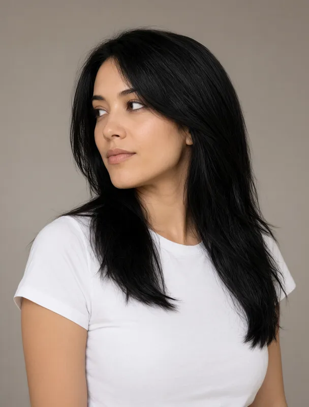
qwen image 2.1jet black
a full color studio portrait photograph in three-quarter view, framed from the shoulders up, lit by a soft diffused key light against a plain warm gray backdrop. the subject is a mixed race woman of about twenty five with light skin. her hair is jet black, long blowout layers. she wears a plain white crew-neck t-shirt. she is turned three quarters toward the left side of the frame and gazes off to the left side of the frame, away from the camera.
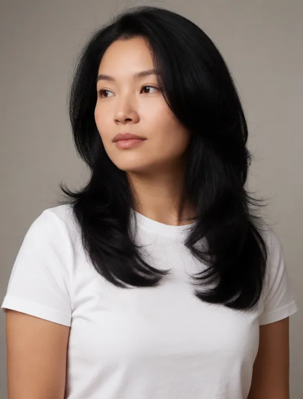
krea 2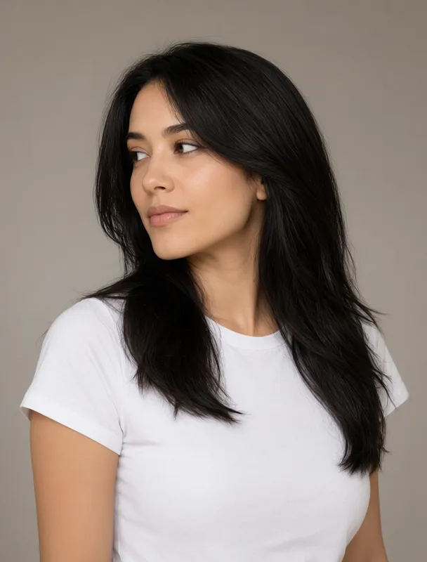
qwen image 2.1soft black
a full color studio portrait photograph in three-quarter view, framed from the shoulders up, lit by a soft diffused key light against a plain warm gray backdrop. the subject is a mixed race woman of about twenty five with light skin. her hair is soft black, long blowout layers. she wears a plain white crew-neck t-shirt. she is turned three quarters toward the left side of the frame and gazes off to the left side of the frame, away from the camera.
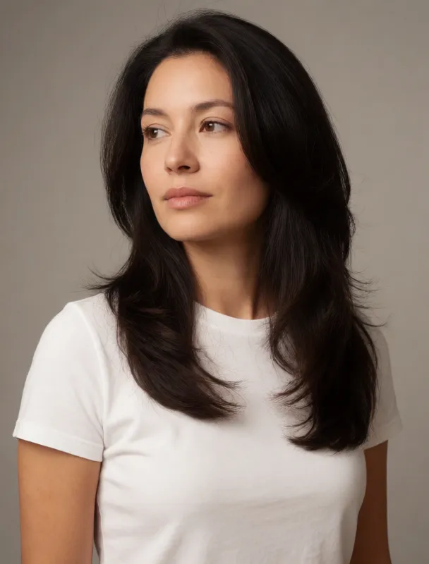
krea 2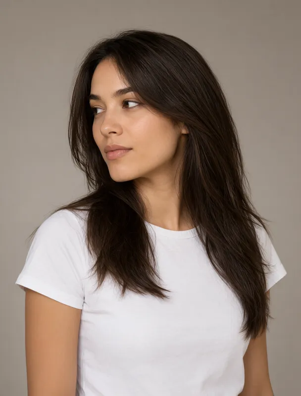
qwen image 2.1dark brown
a full color studio portrait photograph in three-quarter view, framed from the shoulders up, lit by a soft diffused key light against a plain warm gray backdrop. the subject is a mixed race woman of about twenty five with light skin. her hair is dark brown, long blowout layers. she wears a plain white crew-neck t-shirt. she is turned three quarters toward the left side of the frame and gazes off to the left side of the frame, away from the camera.
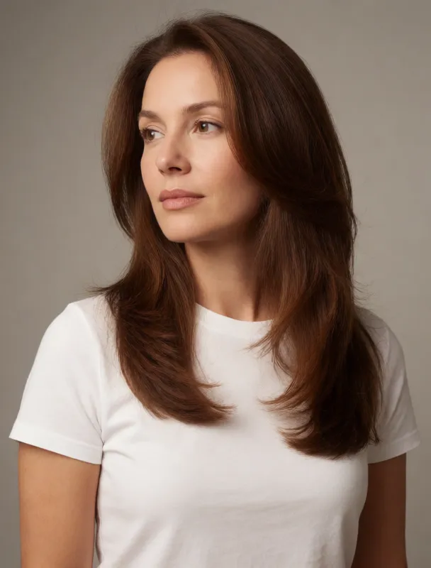
krea 2 qwen image 2.1
qwen image 2.1chestnut brown
a full color studio portrait photograph in three-quarter view, framed from the shoulders up, lit by a soft diffused key light against a plain warm gray backdrop. the subject is a mixed race woman of about twenty five with light skin. her hair is chestnut brown, long blowout layers. she wears a plain white crew-neck t-shirt. she is turned three quarters toward the left side of the frame and gazes off to the left side of the frame, away from the camera.
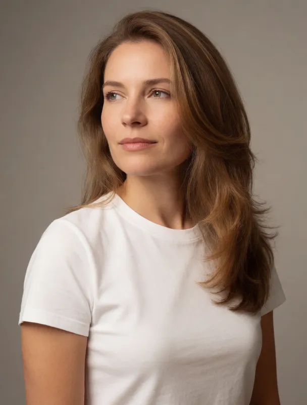
krea 2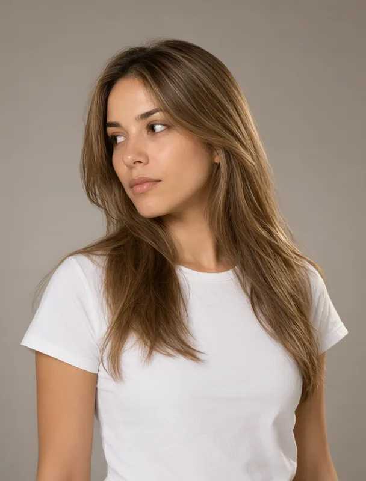
qwen image 2.1light brown
a full color studio portrait photograph in three-quarter view, framed from the shoulders up, lit by a soft diffused key light against a plain warm gray backdrop. the subject is a mixed race woman of about twenty five with light skin. her hair is light brown, long blowout layers. she wears a plain white crew-neck t-shirt. she is turned three quarters toward the left side of the frame and gazes off to the left side of the frame, away from the camera.
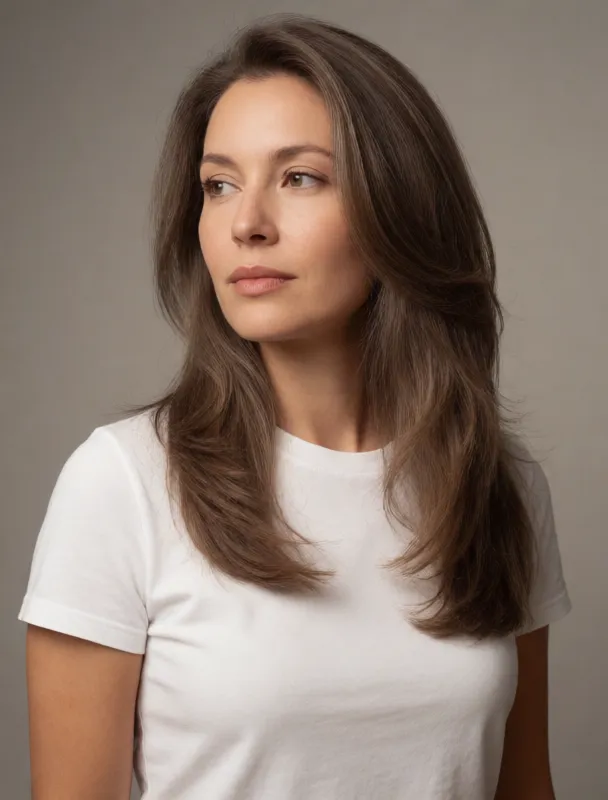
krea 2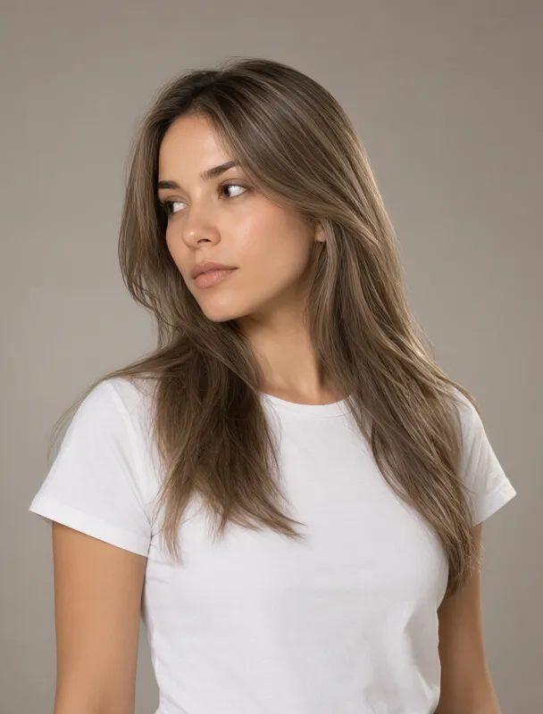
qwen image 2.1ash brown
a full color studio portrait photograph in three-quarter view, framed from the shoulders up, lit by a soft diffused key light against a plain warm gray backdrop. the subject is a mixed race woman of about twenty five with light skin. her hair is ash brown, long blowout layers. she wears a plain white crew-neck t-shirt. she is turned three quarters toward the left side of the frame and gazes off to the left side of the frame, away from the camera.
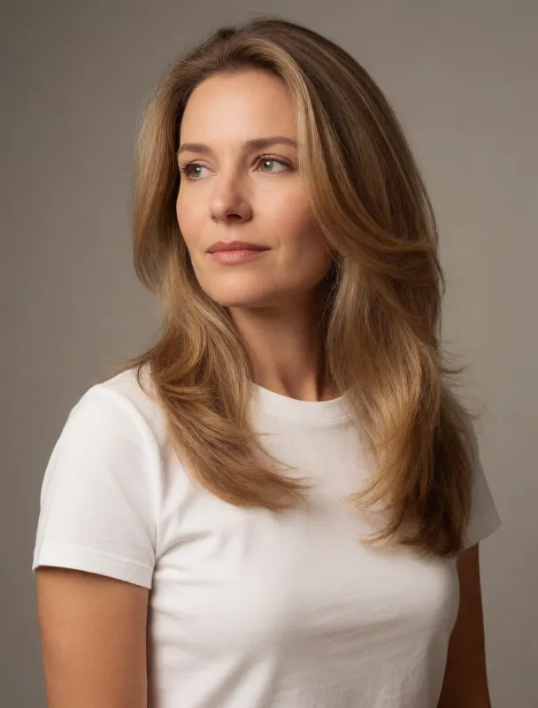
krea 2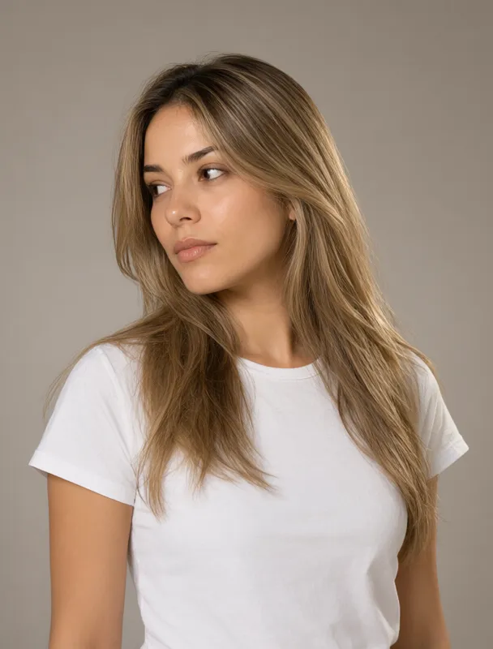
qwen image 2.1dark blonde
a full color studio portrait photograph in three-quarter view, framed from the shoulders up, lit by a soft diffused key light against a plain warm gray backdrop. the subject is a mixed race woman of about twenty five with light skin. her hair is dark blonde, long blowout layers. she wears a plain white crew-neck t-shirt. she is turned three quarters toward the left side of the frame and gazes off to the left side of the frame, away from the camera.
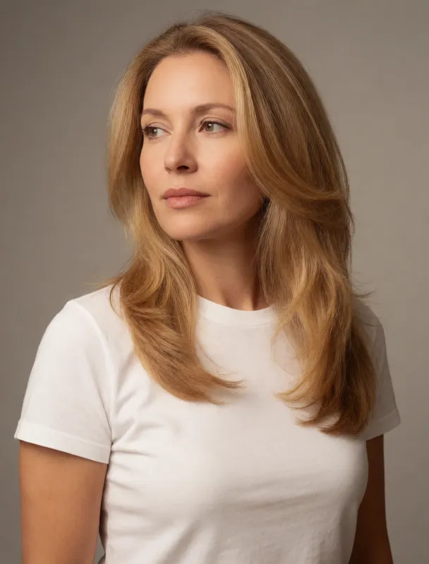
krea 2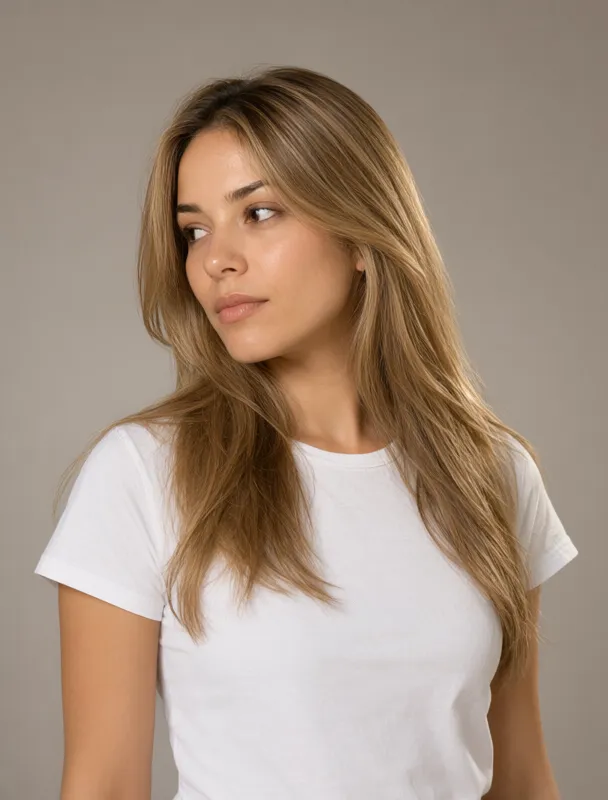
qwen image 2.1honey blonde
a full color studio portrait photograph in three-quarter view, framed from the shoulders up, lit by a soft diffused key light against a plain warm gray backdrop. the subject is a mixed race woman of about twenty five with light skin. her hair is honey blonde, long blowout layers. she wears a plain white crew-neck t-shirt. she is turned three quarters toward the left side of the frame and gazes off to the left side of the frame, away from the camera.
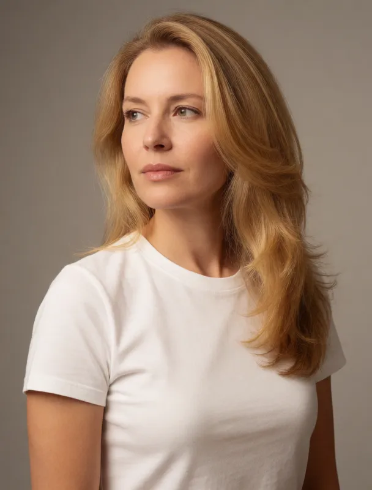
krea 2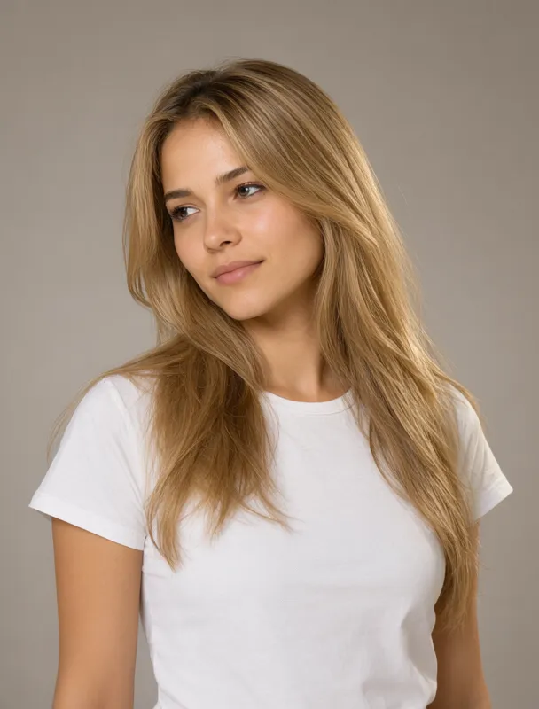
qwen image 2.1golden blonde
a full color studio portrait photograph in three-quarter view, framed from the shoulders up, lit by a soft diffused key light against a plain warm gray backdrop. the subject is a mixed race woman of about twenty five with light skin. her hair is golden blonde, long blowout layers. she wears a plain white crew-neck t-shirt. she is turned three quarters toward the left side of the frame and gazes off to the left side of the frame, away from the camera.
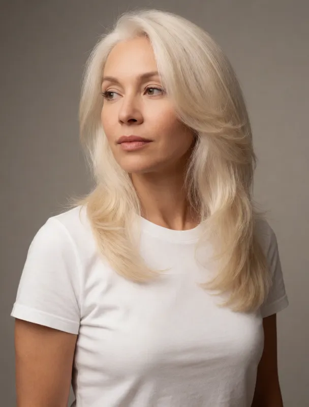
krea 2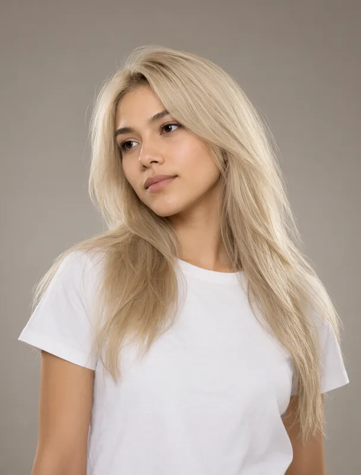
qwen image 2.1platinum blonde
a full color studio portrait photograph in three-quarter view, framed from the shoulders up, lit by a soft diffused key light against a plain warm gray backdrop. the subject is a mixed race woman of about twenty five with light skin. her hair is platinum blonde, long blowout layers. she wears a plain white crew-neck t-shirt. she is turned three quarters toward the left side of the frame and gazes off to the left side of the frame, away from the camera.
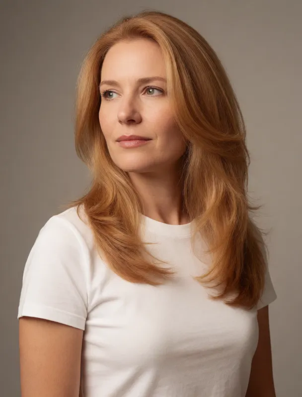
krea 2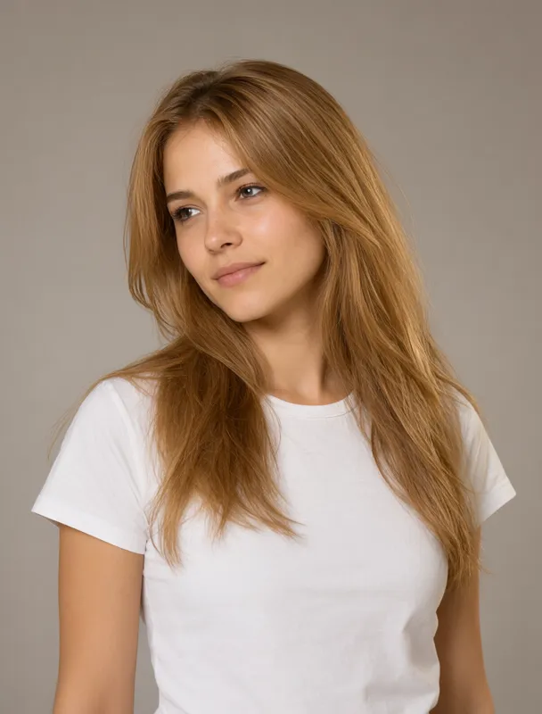
qwen image 2.1strawberry blonde
a full color studio portrait photograph in three-quarter view, framed from the shoulders up, lit by a soft diffused key light against a plain warm gray backdrop. the subject is a mixed race woman of about twenty five with light skin. her hair is strawberry blonde, long blowout layers. she wears a plain white crew-neck t-shirt. she is turned three quarters toward the left side of the frame and gazes off to the left side of the frame, away from the camera.
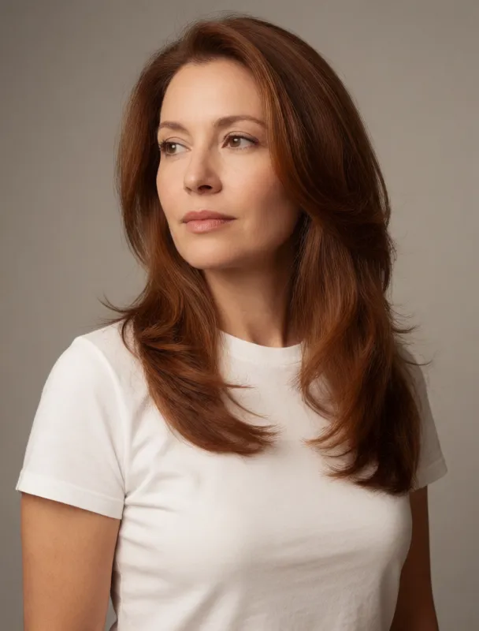
krea 2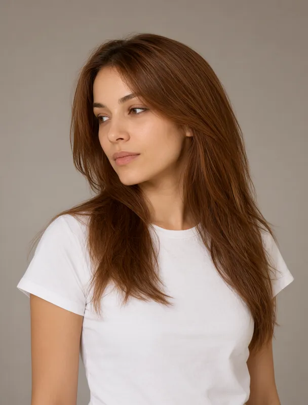
qwen image 2.1auburn
a full color studio portrait photograph in three-quarter view, framed from the shoulders up, lit by a soft diffused key light against a plain warm gray backdrop. the subject is a mixed race woman of about twenty five with light skin. her hair is auburn, long blowout layers. she wears a plain white crew-neck t-shirt. she is turned three quarters toward the left side of the frame and gazes off to the left side of the frame, away from the camera.
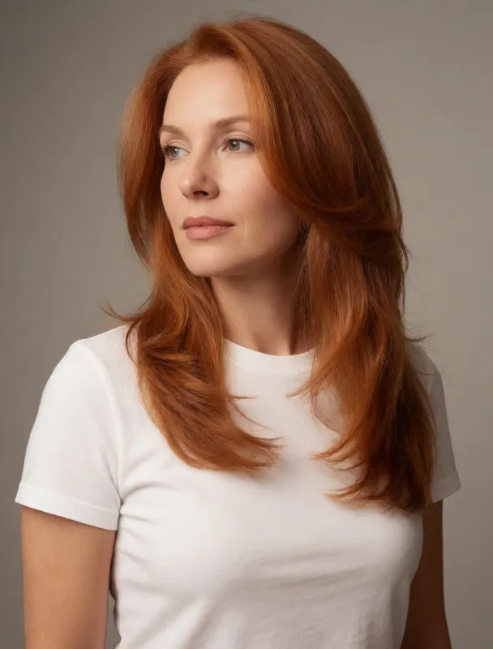
krea 2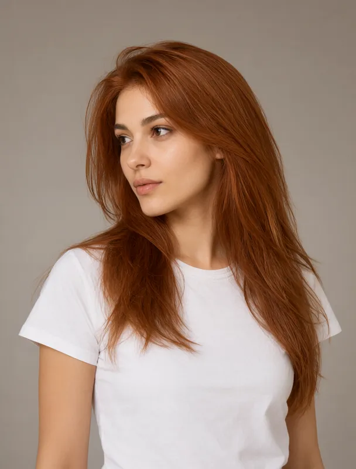
qwen image 2.1copper red
a full color studio portrait photograph in three-quarter view, framed from the shoulders up, lit by a soft diffused key light against a plain warm gray backdrop. the subject is a mixed race woman of about twenty five with light skin. her hair is copper red, long blowout layers. she wears a plain white crew-neck t-shirt. she is turned three quarters toward the left side of the frame and gazes off to the left side of the frame, away from the camera.
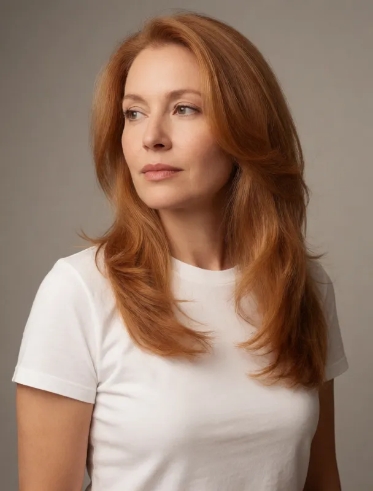
krea 2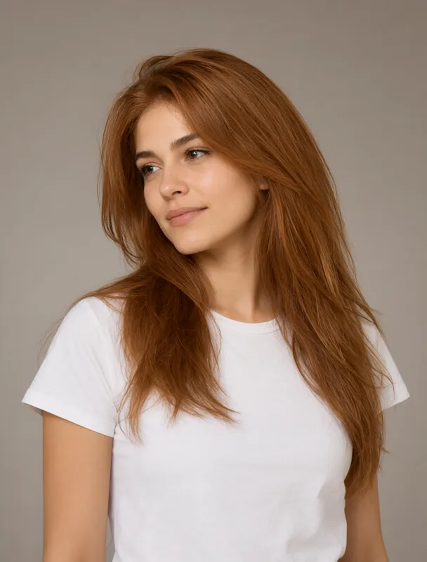
qwen image 2.1ginger
a full color studio portrait photograph in three-quarter view, framed from the shoulders up, lit by a soft diffused key light against a plain warm gray backdrop. the subject is a mixed race woman of about twenty five with light skin. her hair is ginger, long blowout layers. she wears a plain white crew-neck t-shirt. she is turned three quarters toward the left side of the frame and gazes off to the left side of the frame, away from the camera.